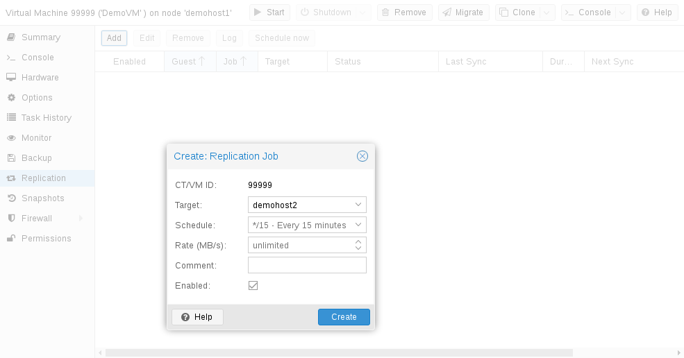

9. 저장소 복제#
pvesr 명령줄 도구는 Proxmox VE 저장소 복제 프레임워크를 관리합니다. 저장소 복제는 로컬 저장소를 사용하는 게스트에게 중복성을 제공하고 마이그레이션 시간을 줄여줍니다.
게스트 볼륨을 다른 노드에 복제하여 공유 저장소를 사용하지 않고도 모든 데이터를 사용할 수 있도록 합니다. 복제는 스냅샷을 사용하여 네트워크를 통해 전송되는 트래픽을 최소화합니다. 따라서 새 데이터는 초기 전체 동기화 후에만 증분적으로 전송됩니다. 노드 장애가 발생하는 경우 게스트 데이터는 복제된 노드에서 계속 사용할 수 있습니다.
복제는 구성 가능한 간격으로 자동으로 수행됩니다. 최소 복제 간격은 1분이며 최대 간격은 일주일에 한 번입니다. 이러한 간격을 지정하는 데 사용되는 형식은 systemd 캘린더 이벤트의 하위 집합입니다. 일정 형식 섹션을 참조하세요.
게스트를 여러 대상 노드에 복제할 수 있지만 동일한 대상 노드에 두 번 복제할 수는 없습니다.
각 복제 대역폭은 저장소나 서버에 과부하가 걸리지 않도록 제한할 수 있습니다.
게스트가 이미 복제된 노드로 마이그레이션되는 경우 마지막 복제 이후의 변경 사항(소위 델타(deltas))만 전송하면 됩니다. 이렇게 하면 필요한 시간이 크게 줄어듭니다. 게스트를 복제 대상 노드로 마이그레이션하면 복제 방향이 자동으로 전환됩니다.
예: VM100은 현재 nodeA에 있으며 nodeB로 복제됩니다. 이를 nodeB로 마이그레이션하면 이제 자동으로 nodeB에서 nodeA로 다시 복제됩니다.
게스트가 복제되지 않은 노드로 마이그레이션하는 경우 전체 디스크 데이터를 전송해야 합니다. 마이그레이션 후 복제 작업은 이 게스트를 구성된 노드로 계속 복제합니다.
고가용성은 스토리지 복제와 함께 허용되지만 마지막 동기화 시간과 노드가 실패한 시간 사이에 일부 데이터 손실이 발생할 수 있습니다.
9.1. 지원되는 스토리지 유형#
 스토리지 유형
스토리지 유형
스토리지 유형 |
플러그인 타입 |
스냅샷 |
안정성 |
|---|---|---|---|
ZFS (local) |
zfspool |
yes |
yes |
9.2. 일정 포맷#
복제는 일정을 구성하기 위해 달력 이벤트를 사용합니다.
9.3. 오류 처리#
복제 작업에 문제가 발생하면 오류 상태가 됩니다. 이 상태에서는 구성된 복제 간격이 일시적으로 중단됩니다. 실패한 복제는 30분 간격으로 반복적으로 다시 시도됩니다. 이것이 성공하면 원래 일정이 다시 활성화됩니다.
9.3.1. 발생 가능한 문제#
가장 일반적인 문제 중 일부는 다음 목록에 나와 있습니다. 설정에 따라 다른 원인이 있을 수 있습니다.
네트워크가 작동하지 않습니다.
복제 대상 저장소에 남은 여유 공간이 없습니다.
대상 노드에서 동일한 저장소 ID를 가진 저장소를 사용할 수 있습니다.
9.3.2. 오류 발생 시 게스트 마이그레이션#
심각한 오류가 발생한 경우 가상 게스트가 실패한 노드에 갇힐 수 있습니다. 그런 다음 수동으로 다시 작동하는 노드로 이동해야 합니다.
9.3.3. 예제#
노드 A에서 실행 중인 두 개의 게스트(VM 100 및 CT 200)가 있고 노드 B로 복제한다고 가정해 보겠습니다. 노드 A가 실패하여 다시 온라인 상태가 될 수 없습니다. 이제 게스트를 노드 B로 수동으로 마이그레이션해야 합니다.
ssh를 통해 노드 B에 연결하거나 웹 UI를 통해 셸을 엽니다.
클러스터가 쿼럼인지 확인합니다.
# pvecm status쿼럼이 없는 경우 먼저 이를 수정하고 노드를 다시 작동 가능하게 만드는 것이 좋습니다. 현재 이것이 불가능한 경우에만 다음 명령을 사용하여 현재 노드에서 쿼럼을 적용할 수 있습니다.
# pvecm expected 1 예상 투표가 설정된 경우 클러스터에 영향을 미치는 변경(예: 노드, 스토리지, 가상 게스트 추가/제거)은 어떤 경우에도 피하십시오. 중요한 게스트를 다시 가동하거나 쿼럼 문제 자체를 해결하는 데만 사용하십시오.두 게스트 구성 파일을 원본 노드 A에서 노드 B로 이동합니다.
# mv /etc/pve/nodes/A/qemu-server/100.conf /etc/pve/nodes/B/qemu-server/100.conf # mv /etc/pve/nodes/A/lxc/200.conf /etc/pve/nodes/B/lxc/200.conf
이제 게스트를 다시 시작할 수 있습니다.
# qm start 100 # pct start 200
VMID와 노드 이름을 해당 값으로 바꾸는 것을 잊지 마십시오.
9.4. 작업 관리#

웹 GUI를 사용하여 복제 작업을 쉽게 만들고, 수정하고, 제거할 수 있습니다. 또한 명령줄 인터페이스(CLI) 도구 pvesr을 사용하여 이를 수행할 수 있습니다.
웹 GUI에서 모든 수준(데이터센터, 노드, 가상 게스트)에서 복제 패널을 찾을 수 있습니다. 표시되는 작업이 다릅니다. 모든 작업, 노드별 작업 또는 게스트별 작업입니다.
새 작업을 추가할 때는 아직 선택하지 않은 게스트와 대상 노드를 지정해야 합니다. 기본값인 all 15 minutes(15분)이 필요하지 않으면 복제 일정을 설정할 수 있습니다. 복제 작업에 속도 제한을 적용할 수 있습니다. 속도 제한은 스토리지의 부하를 허용 가능한 수준으로 유지하는 데 도움이 될 수 있습니다.
복제 작업은 클러스터 전체 고유 ID로 식별됩니다. 이 ID는 작업 번호 외에도 VMID로 구성됩니다. CLI 도구를 사용하는 경우에만 이 ID를 수동으로 지정해야 합니다.
9.5. 명령줄 인터페이스 예제#
ID가 100인 게스트에 대해 10Mbps(초당 메가바이트)의 제한된 대역폭으로 5분마다 실행되는 복제 작업을 만듭니다.
# pvesr create-local-job 100-0 pve1 --schedule "*/5" --rate 10
ID가 100-0인 활성 작업을 비활성화합니다.
# pvesr disable 100-0
ID가 100-0인 비활성화된 작업을 활성화합니다.
# pvesr enable 100-0
ID가 100-0인 작업의 스케줄 간격을 1시간에 한 번으로 변경합니다.
# pvesr update 100-0 --schedule '*/00'